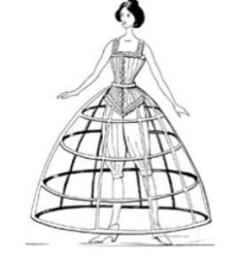
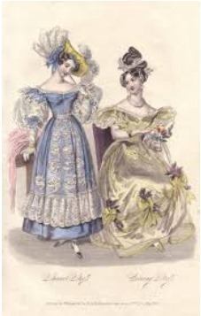
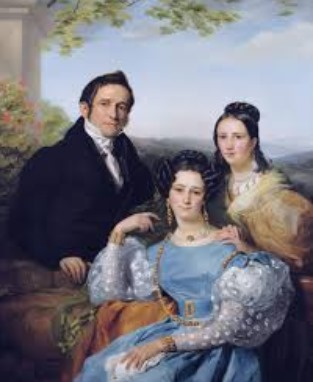
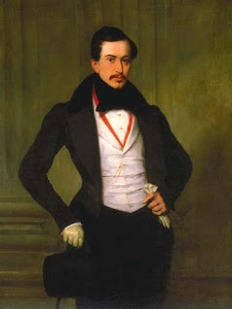
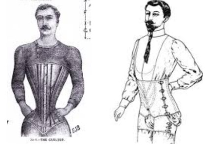

Houve vários acontecimentos políticos na década de 1830 no Brasil, entre eles o Código Criminal de 1830, o qual foi um marco importante para a organização e a aplicação da lei no jovem império.
Até 1830, a colônia e, posteriormente, o novo império, eram submetidos ao que estava estabelecido nas chamadas Ordenações do Reino. Entre as penas estavam, por exemplo, a morte natural para sempre, ou seja, o cadáver ficava exposto até que apodrecesse na forca; e a morte natural por esquartejamento. O Código Criminal do Império vem para abolir essas penas.
O Código Criminal do Império possuía uma relação de equivalência entre autores e cúmplices de um crime (Art 4º e 5º), além de agravar a pena de um homicídio quando o mesmo tem caráter planejado (Art 192).
Lei Para Inglês Ver (Lei Feijó - 1831)
Em 1831, além de enfrentar o movimento das ruas e das tropas, os interesses divergentes de restauradores e exaltados, os atentados, as fugas de escravos e insurreições negras, o governo regencial tinha, também, que enfrentar a pressão inglesa para a extinção do tráfico negreiro internacional. Diversos acordos já tinham sido assinados entre o Brasil e a Inglaterra, limitando o alcance e a abrangência do tráfico negreiro, mas todos esses acordos ainda não eram suficientes para a Inglaterra, que visava mesmo o fim da escravidão. Essa pressão inquietava o governo regencial e sua força de apoio – os moderados –, uma vez que a economia brasileira dependia profundamente da mão de obra escrava.
Aspectos políticos
Regências
Em abril de 1831, imperador Dom Pedro I abdicou do trono brasileiro. Como o Primeiro Reinado ficou marcado pelo autoritarismo do imperador e pelos crescentes confrontos entre brasileiros e portugueses, as tensões e as pressões existentes fizeram o imperador abdicar. Desse modo, seu sucessor era seu filho, mas o príncipe possuía apenas 5 anos e, por lei, não poderia ser coroado até que completasse 18 anos. Desse modo a solução era fazer um período de transição em que o país seria governado por regentes, chamado de Período Regencial. Esse período deveria ter acontecido até 1844, quando Pedro de Alcântara completaria 18 anos, mas seu fim foi antecipado para 1840 por meio do golpe da maioridade.
Ao longo do Período Regencial, o Brasil possuiu quatro regências diferentes, as quais podem ser utilizadas como marcos divisórios do Período Regencial. Os quatro períodos foram:
Regência Trina Provisória (1831): Após a abdicação, o Brasil foi inicialmente governado por uma regência trina provisória composta por Francisco de Lima e Silva, Nicolau Pereira de Campos Vergueiro e José Joaquim Carneiro de Campos. Essa regência teve um caráter conciliador, tomando medidas como a anistia de criminosos políticos, o afastamento de estrangeiros desordeiros do Exército e a convocação de uma nova Assembleia Legislativa. Apesar de seus esforços, a regência enfrentava um cenário político tumultuado e durou poucos meses.
Regência Trina Permanente (1831-1834): Em junho de 1831, foi eleita a Regência Trina Permanente, composta por José da Costa Carvalho, João Bráulio Muniz e Francisco de Lima e Silva. Durante este período, medidas importantes foram tomadas, como a criação da Guarda Nacional, uma força pública destinada a conter revoltas e proteger a ordem, e a reforma do Poder Moderador, que limitou algumas de suas atribuições. Porém, as tensões políticas entre Liberais Moderados, Liberais Exaltados e Restauradores continuaram intensas, resultando em revoltas como a Cabanada (1832). Para lidar com os conflitos e atender às demandas por maior autonomia regional, foi aprovado o Ato Adicional de 1834, que introduziu mudanças significativas, como a criação das Assembleias Legislativas Provinciais, aumento dos poderes dos presidentes de província e substituição da regência trina por uma regência una. Essas mudanças deram início a uma experiência de descentralização política, aproximando o Brasil de um modelo federalista.
Regência Una de Feijó (1835-1837): Com a nova configuração política, o padre Diogo Antônio Feijó foi eleito regente uno em 1835. Contudo, seu governo foi marcado por intensa oposição e instabilidade. Mesmo entre seus aliados, os Liberais Moderados, havia críticas à sua gestão, considerada indecisa e tolerante. Além disso, as divisões políticas se reorganizaram entre progressistas (favoráveis às medidas liberais do Ato Adicional) e regressistas (que buscavam restaurar maior centralização). Durante o mandato de Feijó, estouraram revoltas como a Cabanagem (1835) no Pará e a Revolta dos Farrapos (1835) no Rio Grande do Sul, expressando a insatisfação popular e regional com o governo central. Fragilizado pela oposição e por problemas de saúde, Feijó renunciou em 1837.
Regência Una de Araújo Lima (1837-1840): após a renúncia de Feijó, Pedro de Araújo Lima foi eleito regente uno. Seu governo marcou o fortalecimento dos conservadores, que viam as revoltas como consequência das liberdades concedidas pelo Ato Adicional. Em resposta, foi aprovada em 1840 a Lei Interpretativa do Ato Adicional, que reverteu parte das concessões feitas às províncias, consolidando um movimento de centralização. Apesar dos esforços dos conservadores, as insatisfações continuavam, levando os liberais a organizarem o Clube da Maioridade, que defendia a antecipação da coroação de Dom Pedro II como solução para a crise política. Pressionado, o governo regencial encerrou-se em 1840 com o chamado Golpe da Maioridade, quando Dom Pedro II foi coroado aos 14 anos, marcando o início do Segundo Reinado. As regências foram um período de experimentação política, marcado por tentativas de equilibrar centralização e autonomia, e por profundas tensões sociais e regionais que moldaram a história do Brasil.
Revoltas
E por fim, a década de 1830 ficou caracterizada como um período de muitos movimentos contestatórios. A abdicação de D. Pedro I e a impossibilidade de D. Pedro II assumir o trono do império deixou a nação exposta a levantes. Ao longo do Período Regencial, as principais revoltas que aconteceram foram:
Revolta de Carrancas (1833): ocorrido no município de Carrancas, na então Província de Minas Gerais. O levante foi impulsionado pela insatisfação com as péssimas condições de vida e pela crueldade dos senhores de escravos, então um grupo de escravizados iniciou a revolta com o principal objetivo da libertação e o fim da opressão. Eles atacaram propriedades rurais, mataram senhores e familiares e tentaram organizar uma fuga em massa. Apesar da coragem dos revoltosos, o movimento foi rapidamente reprimido por forças locais, com apoio de milícias particulares dos fazendeiros. A repressão foi brutal: os revoltosos capturados foram punidos severamente, com muitos sendo executados, e os que sobreviveram foram submetidos a castigos exemplares para desestimular futuros levantes.
Revolta dos Malês (1835): ocorreu em 25 de janeiro de 1835, em Salvador, e foi uma rebelião liderada por escravizados africanos muçulmanos, conhecidos como "malês". Eles se aproveitaram da maior liberdade de locomoção que possuíam como escravizados urbanos para planejar um levante contra o sistema escravista. No entanto, a revolta foi descoberta antes de ser executada completamente, e os envolvidos foram atacados pelas forças policiais. Os combates se espalharam pelas ruas de Salvador e duraram várias horas, resultando na morte de cerca de 70 revoltosos e 9 soldados. A última batalha aconteceu no bairro de Água de Meninos, e muitos dos escravizados, tentando escapar pela costa, se afogaram no mar. A revolta fracassou devido à rápida repressão, mas destacou a resistência e a organização dos escravizados urbanos.
Sabinada (1837-1838): ocorrida em Salvador, Bahia, os revoltosos baianos, insatisfeitos com a centralização do poder, liderados pelo médico Francisco Sabino, reivindicavam a criação de uma república baiana provisória até que Dom Pedro II assumisse o trono. O movimento conseguiu ocupar Salvador por alguns meses, mas enfrentou resistência de forças imperiais e de aliados locais do governo central. A rebelião foi sufocada em 1838, resultando na morte de centenas de rebeldes e na deportação de outros.
Balaiada (1838-1841): ocorrida na província do Maranhão, a revolta teve origem na insatisfação dos sertanejos e escravizados com a concentração de terras e poder nas mãos das elites locais. Grupos marginalizados, como artesãos (os "balaieiros") e escravizados, uniram-se para protestar contra as condições precárias de vida. Foi liderada por Manuel Balaio, Raimundo Gomes e o ex-escravizado Cosme, a revolta conquistou várias cidades, mas enfrentou uma repressão feroz. Após anos de luta, a Balaiada foi derrotada pelo Exército imperial em 1841, reforçando o controle central sobre a região.
Revolta dos Farrapos (1835-1845): foi uma das revoltas provinciais que aconteceram no território brasileiro durante o Período Regencial. Ela ganhou notoriedade pelo maior tempo de duração e, além disso, foi uma das que apresentaram maior ameaça à integridade territorial brasileira. Organizada como um movimento da elite gaúcha, a Guerra dos Farrapos encerrou-se após a negociação de paz dos estancieiros gaúchos com o governo. Os termos da rendição ficaram conhecidos como Tratado do Poncho Verde.
Economia
Na década de 1830, a economia do Brasil era baseada na agricultura, na escravidão e no foco nos mercados externos, refletindo o modelo colonial adotado séculos antes. A seguir, será apresentado alguns dos principais pontos em que a economia brasileira se baseava durante a década de 1830:
Açúcar: a indústria açucareira era um dos pilares da economia do Brasil desde os tempos coloniais, especialmente no Nordeste, Pernambuco e Bahia. Embora a produção de açúcar fosse pequena, os lucros eram elevados. A agricultura depende de grandes engenhos - o que acabava por concentrar a agricultura -, moagem e processamento de cana em açúcar para exportação. O Brasil enfrenta forte concorrência das ilhas do que hoje é o Caribe, como Cuba e outras ilhas controladas pelos britânicos, que produziam açúcar capaz de competir. Mesmo assim, os produtos brasileiros eram importantes no mercado europeu.
Café: o café tornou-se um importante produto de exportação, especialmente na região do Vale do Paraíba, que abrange partes do Rio de Janeiro e São Paulo. O crescimento da produção de café foi atribuído a fatores como terras férteis, proximidade de portos e altos níveis de escravidão. A agricultura era praticada em grandes plantações escravistas mas exigia muita mão-de-obra. O cultivo do café era uma atividade econômica forte que representou uma transição agrícola que dominaria o mercado ao passar dos anos.
Algodão: o algodão cresceu grandemente durante a transição do século XVIII para XIX, quando a Revolução Industrial britânica exigiu recursos para produzir seus produtos têxteis. Na década de 1830, seu valor começou a diminuir devido à concorrência dos Estados Unidos, mas ainda era um produto muito relevante. No Brasil, o algodão era cultivado principalmente em locais de clima favorável, como Maranhão e Ceará. Ao contrário do café, a produção de algodão não dependia principalmente da escravidão, embora ainda utilizasse trabalho escravo em larga escala.
Escravidão: a base de toda essa riqueza estava principalmente na escravidão, que era utilizada em todas as atividades produtivas, principalmente em produtos que seriam exportados. Embora a Lei Feijó ("para Inglês ver") proibisse a venda e compra de escravos não tenha sido devidamente aplicada, o comércio clandestino continuou.
Relações internacionais: o Brasil dependia fortemente da exportação de produtos primários (açúcar, café, algodão...) e da importação de bens manufaturados, especialmente da Inglaterra, que era o principal parceiro comercial. Portanto, o Brasil não tinha nenhum incentivo à atividade industrial, então o mantinha num cargo de "fornecedor" para os países industrializados.
Cultura
Literatura
Nessa década, o Brasil estava vivendo uma fase de consolidação do império, após a independência em 1822. Esse período coincidiu com a Revolução Industrial, o Romantismo e mudanças políticas e sociais. A cultura desse ano refletia essas transformações e variava bastante dependendo da região, mas alguns aspectos chave podem ser destacados.
O Romantismo foi um movimento artístico e literário que ganhou força na Europa. Esse movimento foi uma reação contra o Racionalismo e o Iluminismo, que priorizavam a razão e a ciência. O Romantismo enfatizava:
Nacionalismo: exaltação da natureza nacional por meio do resgate de ícones nacionais, como os índios em romances de José de Alencar, seja ainda pela retomada de estilos, formas e ritmos típicos do passado nacional resgatando vários elementos medievais em suas obras.
Sentimento e liberdade de expressão: liberdade de criação era uma das maiores máximas do movimento. Os sentimentos, em livre expressão, seriam os condutores ideais para criar nesse novo momento.
Egoísmo e natureza: a natureza deixou de ser um simples cenário e passou a ser uma espécie de extensão do "eu". Isso fica claro ao observar a obra” Os sofrimentos do jovem Werther” de Goethe, onde o eu lírico comete suicídio por ter um amor não correspondido, mas momentos antes, é circundado por uma natureza violenta, noturna e chuvosa, essa tempestade externa retrata os sentimentos interno da personagem.
Moda Feminina
A moda no Brasil para as mulheres estava fortemente influenciada pelos estilos europeus, especialmente os da França e da Inglaterra, mas com adaptações para o clima tropical e a realidade social brasileira. Como já foi dito, estávamos em um período de transição e as mulheres, especialmente nas grandes cidades como Rio de Janeiro, começaram a adotar vestimentas mais alinhadas aos padrões da moda européia da época.
As mulheres usavam vestidos com saias volumosas e corpetes apertados, enquanto os homens, sobretudo nas classes altas, vestiam roupas formais com casacos longos.
O estilo era marcado por vestidos de saia ampla, frequentemente com anáguas ou crinolinas para dar volume à parte inferior, e uma linha de cintura bem definida, que ficava logo abaixo dos seios, criando uma figura em "ampulheta".
O uso do corset para moldar a silhueta era comum entre as mulheres da elite. Ele ajudava a criar a figura desejada de cintura fina. Já as anáguas (ou crinolinas) eram usadas para aumentar o volume das saias.



Moda Masculina
Assim como a feminina, a moda masculina visava ombros largos, cintura fina e tons escuros em momentos formais, com ênfase em um visual elegante e mais ajustado, mas ainda com um toque de formalidade e sofisticação. Roupas justas, calças afinadas e cumpridas, feitas de tecidos como lã ou algodão.

Coletes e camisas: Coletes curtos e justos, com linhas secas que seguiam o contorno do corpo. Era muito comum usar camisas de linho com colarinhos altos e firmes. A gola rígida era um elemento essencial, muitas vezes combinada com um lenço ou gravata.
Paletó: O "frock coat" (casaco de caimento reto) era uma peça central com fechamento frontal de botão.
O espartilho masculino era chamado de “cintas”, “cintos” ou “vestes”, por que a palavra “corset" soava muito feminina. Homens de classe média costumavam usar cintas ou acessórios parecidos para marcar a cintura, o que demonstrava status.

Barba e acessórios: O estilo de cabelo masculino passou a ser mais controlado e penteado para trás, com os cortes mais curtos.
Cabelo e bigode: O estilo de cabelo passou a ser mais curto e penteado para trás. A barba não era tão comum na década, mas os bigodes, finos e bem cuidados, começaram a ganhar popularidade entre alguns homens. Muitos preferiam um estilo mais limpo, com o rosto aparado.
Tecnologia do engenho
A tecnologia do engenho na década de 1830 no Brasil é um tema que remete ao contexto da produção de açúcar, que ainda era um dos principais motores da economia brasileira, especialmente nas regiões Nordeste e Sudeste. Embora o ciclo do açúcar já estivesse em declínio em relação ao auge que teve nos séculos anteriores, ele ainda era fundamental, e a tecnologia do engenho continuava a ser uma das principais formas de produção.
Papel do Engenho
Os engenhos de açúcar no Brasil eram complexos sistemas de produção, envolvendo a transformação da cana-de-açúcar em açúcar, melaço e aguardente (cachaça).
Suas tecnologias
Na década de 1830, o engenho de açúcar no Brasil ainda mantinha muitas das características dos engenhos do período colonial, mas também era influenciado por algumas inovações tecnológicas, especialmente no processo de moagem e refino do açúcar, como:
Moagem da cana-de-açúcar;
Cozimento e refino do açúcar;
Uso de dornos e caldeiras;
Outras ferramentas e equipamentos.
Fatores de influência
Embora a base da tecnologia de produção do açúcar não tenha mudado drasticamente durante a década de 1830, alguns fatores estavam influenciando a evolução tecnológica no Brasil:
Inovações na engenharia e na indústria;
Difusão do modelo de produção nas regiões do Brasil;
Manutenção e qualidade.
Relação com a sociedade
A tecnologia do engenho estava intimamente ligada à manutenção do sistema escravista no Brasil. Embora ainda em grande parte tradicional, começou a ser impactada por algumas inovações, especialmente nos processos de moagem e refinamento do açúcar. No entanto, as mudanças eram limitadas, e a produção ainda dependia fortemente de métodos artesanais e da força de trabalho escrava.